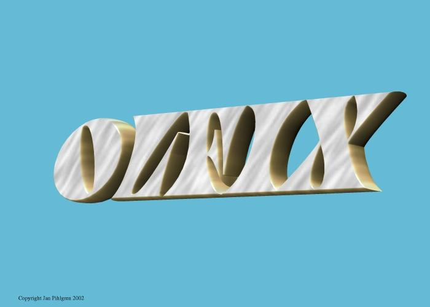

Order/Lager/Fakturering för Linuxsystem
Användarmanual
Kapitel Rapporter
Version 0.43
2007-03-10
This program is free software; you can
redistribute it and/or modify
it under the terms of the GNU General Public License as published by
the Free Software Foundation; either version 2 of the License, or
(at your option) any later version.
Copyright 2004 Jan Pihlgren.
Inledning.
Förutsättningen för att anända OLFIXs rapporter är att man har programpaketet Koffice installerat. I Kofficepaketet finns programmen Kugar och Kspread. Då OLFIX inte innehåller egna utskriftsrutiner använder sig OLFIX av dessa program för att formatera och skriva ut rapporterna.
Kugar används till att hantera utskrifter. Kspread används till att skapa kalkylblad vilka kan användas för egna beräkningar mm.
Resultatrapport.
För att skapa en resultat rapport börjar man att fylla i vilket Bokföringsår man önskar att rapporten ska gälla.
Välj därefter om det ska vara en rapport till Kspread (CSV) eller för utskrift (Kugar).
Avsluta med att klicka på knappen Skapa rapport. Det tar en liten stund innan Kugar respektive Kspread kommer fram på skärmen för vidare åtgärder.
Exempel på resultatrapport klar att skriva ut med Kugar.
Utskriften av rapporten görs genom att klicka på skrivarsymbolen i programmet Kugar.
Skapande av SIE-rapport typ 4.
Välj först vilken typ av SIE-fil som önskas.(Bara typ 4 är ännu implementerad)
Bokföringsår: Tvåställig bokstavskombination som anger vilket
bokföringsår som avses.
Fyll i bokföringsår och tryck på Enter eller klicka på knappen märkt Hämta. Bokföringsår anges med två tecken, normalt 2 bokstäver.
Uppgifter om företaget samt information om bokföringsåret visas på skärmen.
När bokföringsåret börjar och slutar samt vilken kontoplan som används och vilket beskattningsår som avses.
Därefter klickar man på knappen märkt Skapa SIE-fil
Filen finns sedan att hämta i mappen /tmp och har namnet SIEtyp4.txt.